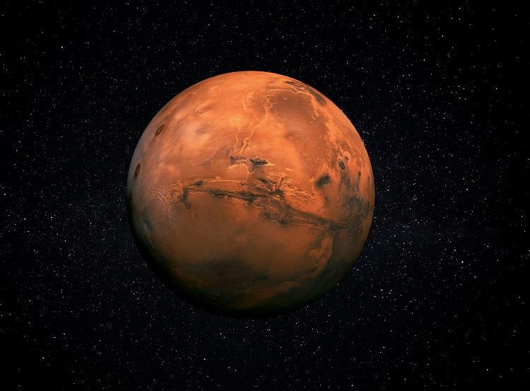
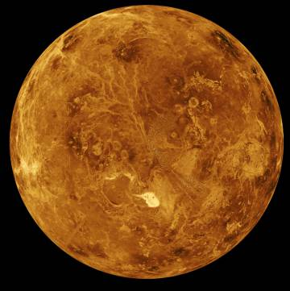
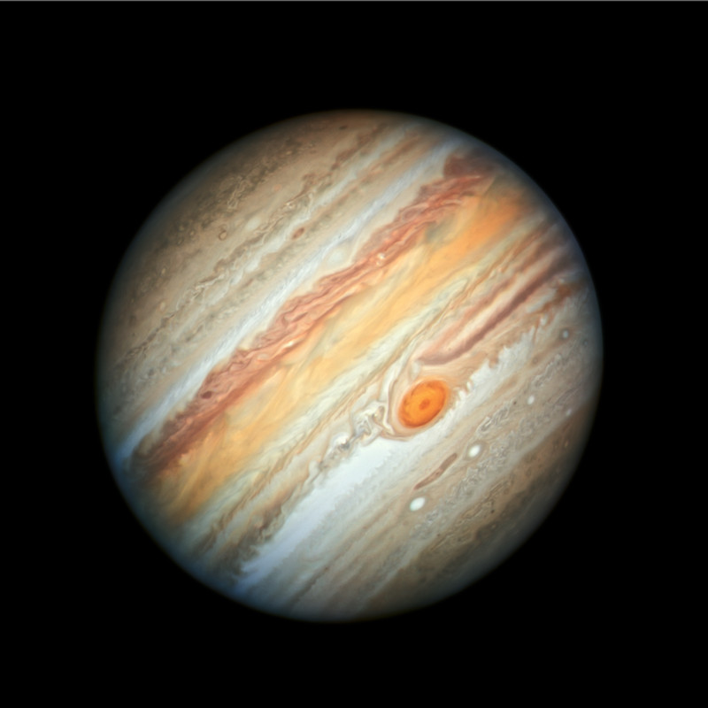

Marte

Provavelmente o primeiro planeta que será colonizado no sistema solar, um planeta considerado pequeno com a metade do diâmetro da terra, com uma temperatura bem variada
oferece um lugar agradável para se observar, porém para viver apenas em caso de necessidade.
Vênus

O Planeta irmão da terra, muito parecido em tamanho porém extremamente quente, provavelmente será um dos melhores para se povoar no futuro.
Júpiter

O maior planeta do sistema solar, com temperaturas baixas e de certa forma, um planeta gasoso que não deve oferecer muito em relação à moradia para as pessoas, mas para visitar
e apreciar toda a beleza que nele consiste, pode ser magnífico.